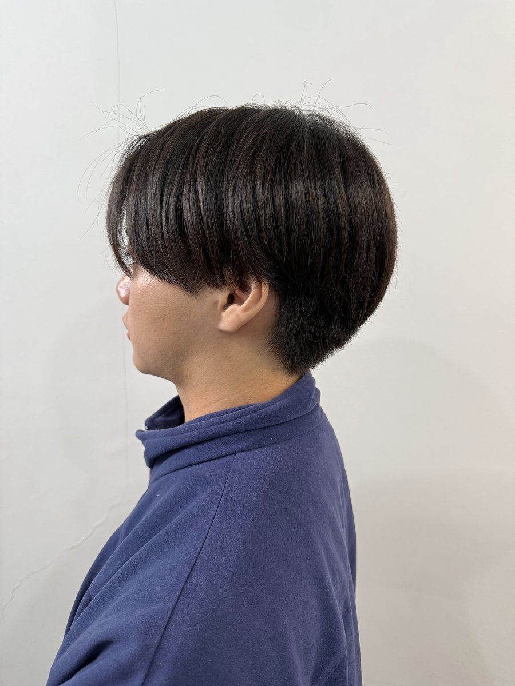
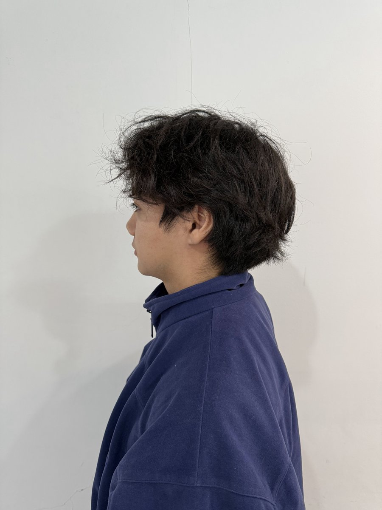
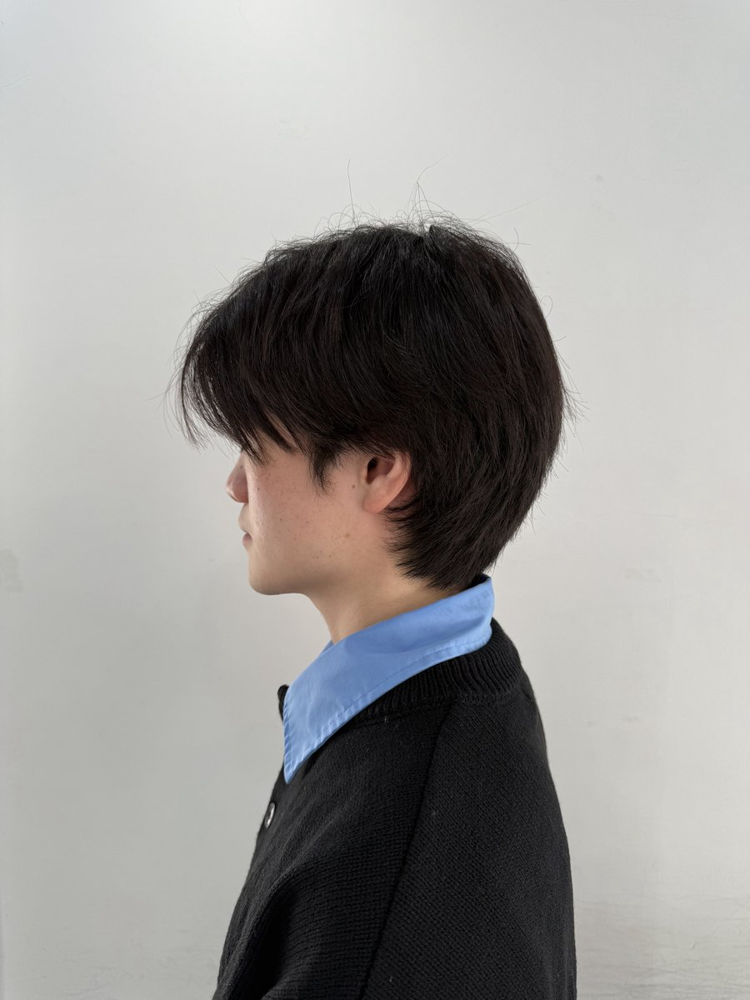
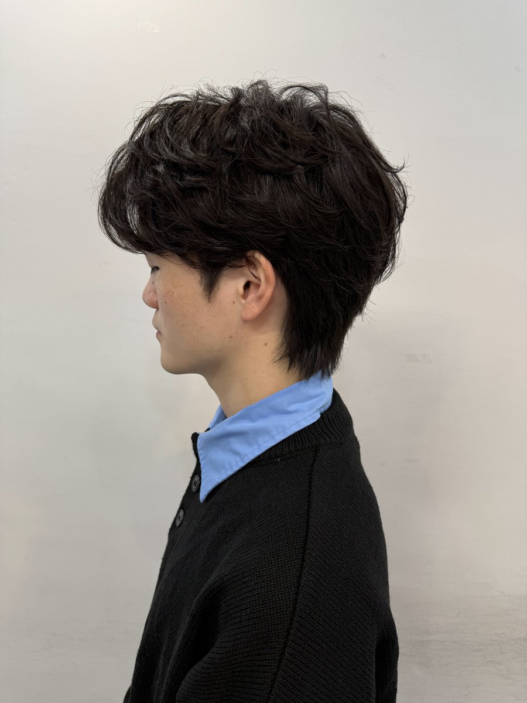
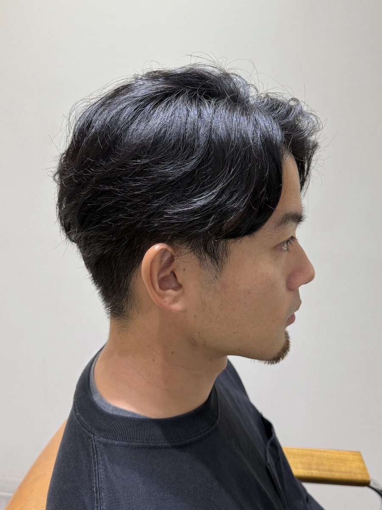
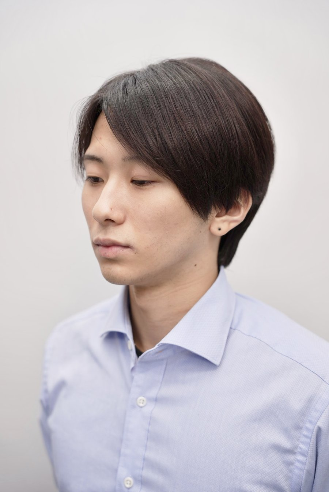
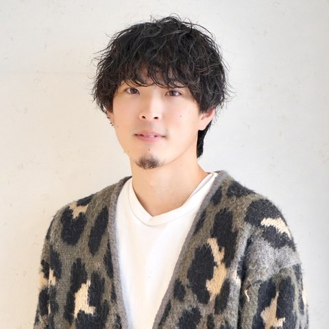

SCROLL
中野駅 徒歩2分／メンズ特化ヘアサロン
スタイリングが苦手な男性へ。good!は、切って終わりではなく 「毎朝どう乾かすか」まで設計するメンズ特化サロンです。 自然な丸みを残す曲がる縮毛矯正と、再現しやすいカットで、 鏡の前で悩む時間をなくします。
朝のセットが苦手で、いつも同じ形にしかならない
ワックスをつけても、髪型がなんとなく決まらない
クセ毛がまとまらず、湿気で髪が膨らんでしまう
縮毛矯正をすると、真っ直ぐすぎて不自然になる
自分に似合う髪型が、正直よくわかっていない
美容室帰りの髪型を、自宅で再現できたことがない
頭の形・髪質・クセ・毛の流れる方向を読んだうえで、乾かすだけでシルエットが決まるようにカットします。ワックスに頼らない再現性を、切る段階から作ります。
メンズ特化サロンとして、男性特有の髪の太さ・生えグセ・骨格の丸み方を日々見てきた知見があります。中野でメンズカットを探す方に、迷いのない提案をします。
クセは伸ばしたいけれど、ピンとした不自然な直毛にはしたくない。そんな要望に応える、自然な丸みと毛流れを残すメンズ縮毛矯正・メンズストレートです。
掛け持ちをしない、1対1の施術。会話のペースも、仕上がりの相談も、自分だけの時間の中でゆっくり決められます。


Before Afterクセ毛 → 曲がる縮毛矯正で、自然なストレートに


Before After広がる髪 → 乾かすだけで収まる美シルエットに


Before After直毛で動きが出ない → ニュアンスパーマで柔らかく
← スワイプで他の事例も見られます
縮毛矯正をかけたことが分かるほど、ピンと真っ直ぐになった髪。 good!の「曲がる縮毛矯正」は、クセだけを落ち着かせて、 髪本来の丸みと毛流れをあえて残します。
中野でメンズ縮毛矯正・メンズストレートをお探しの方は、 一般的な縮毛矯正と比較しながらご相談ください。
パーマは「動きを作る」のではなく「動きを固定する」技術。 ワックスの技術に頼らなくても、寝ぐせのようなラフさを毎朝再現できます。
強くかけすぎず、毛先にわずかな動きを加える定番のメンズパーマ。初めてパーマに挑戦する方にも扱いやすい仕上がりです。
毛束を捻るようにかけ、束感のある動きを演出。乾かすだけでラフな質感が出やすくなります。
強めのカールでしっかり動きを出したい方向け。強いパーマに抵抗がある方には、かかり具合を調整してご提案します。
緩やかな波状のカールで、自然な柔らかさを演出。ビジネスシーンでも浮きにくい、控えめな動きが特徴です。
Hot Pepper Beauty 口コミ平均 4.83（36件）より
★★★★★
「ドライヤーだけで美シルエット」に惹かれて来店。くせが強くお手入れを楽にしたいという難しい希望にも応えてもらい、仕上がりに周囲が気づくほどの変化がありました。マンツーマンなので周りを気にせず相談できたのも良かったです。
20代後半・男性・会社員
★★★★★
細くてまとまりにくい髪が、ふんわりとした自然な毛流れに。丁寧で安心できる時間で、普段のスタイリングがぐっと楽になりました。
30代前半・男性・自営業（曲がる縮毛矯正＋カット）
★★★★☆
前髪や輪郭など、細かい要望までしっかり汲み取ってもらえました。仕上がりは清潔感が出て、日々のセットがしやすくなりました。
30代後半・男性・会社員

メンズパーマ・メンズ縮毛矯正特化スタイリスト／歴12年
直毛・クセ毛・前髪の割れ・サイドの膨らみなど、男性特有の髪の悩みに合わせて、乾かすだけでも形になりやすいヘアをご提案します。完全マンツーマンで、最初から最後まですべて自分の手で仕上げます。